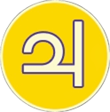

Neurodivergenza
Oltre i confini, la visione si espande.


La forma di Silen che accoglie ogni diversità.
Silen è la specie ancestrale da cui discendono tutti i visitatori del nostro universo. Nella sua forma giovana si fa grande quanto basta per contenere tutte le diversità del neurosviluppo: la comunicazione che cambia forma, l'attenzione che corre, il corpo che parla prima del pensiero. Una raccolta dedicata alla neurodivergenza in tutte le sue sfumature, da accogliere con meraviglia e rispetto.Ogni luna di Giove racconta una sfumatura della neurodivergenza: la comunicazione, l'attenzione, il corpo che parla.
Esplora le schede dedicate alle diverse forme del neurosviluppo e incontra la tua immensità.

Il mondo si sente troppo, e si capisce in modo unico.

Un bisogno di chiarezza in un mondo confuso.

Comunicare oltre le parole.

Il corpo che parla prima del pensiero.

L'attenzione che non sta ferma, ma sa dove andare.
Le opere esposte sono tutelate da diritto d'autore. Per collaborazioni, richieste professionali o per consultare il catalogo delle licenze autorizzate, puoi trovarmi qui:
Ogni riproduzione non autorizzata è vietata.